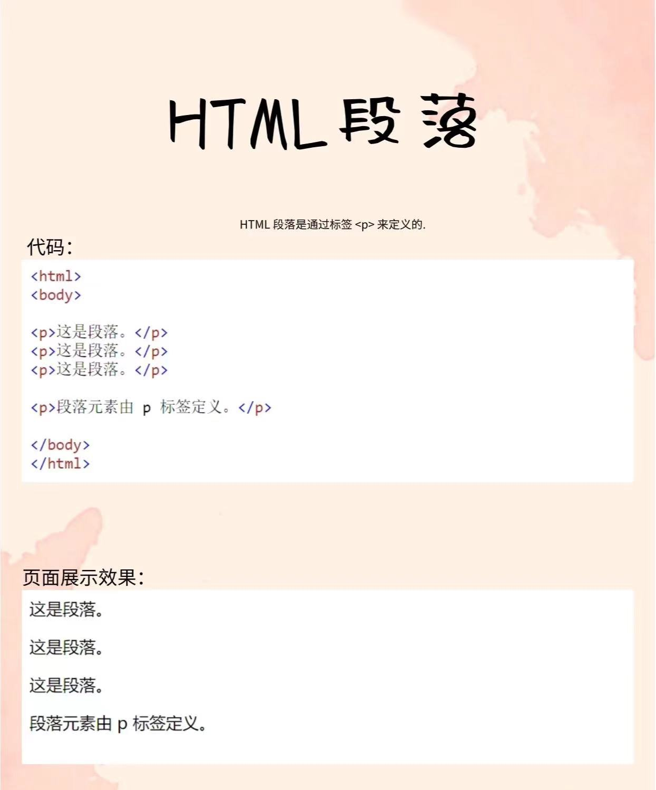
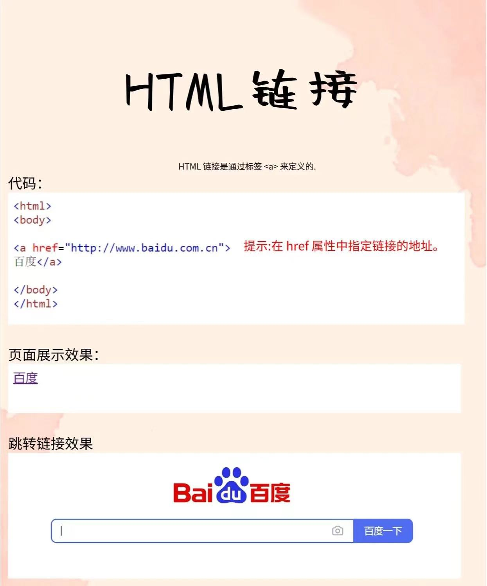
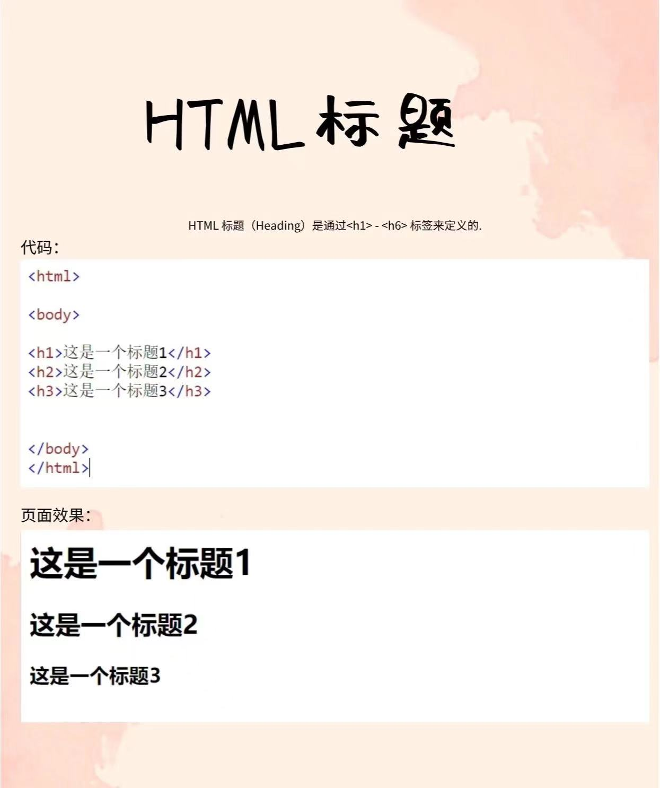

经过一段时间的网页设计HTML课程学习，我收获颇丰。这门课程不仅让我系统地掌握了网页设计与制作的基本知识和技能，还通过实践操作锻炼了我的动手能力和创新思维。经过一段时间的网页设计DW课程学习，...
对于网页设计HTML课程，我认为它非常实用且富有挑战性。课程内容丰富，既包含了理论知识，又强调了实践操作，使我在掌握基本技能的同时，也能在实践中不断提升自己。课程的讲解清晰易懂，老师的教学经验丰富，能够很好地引导学生学习和探索。...
首先是易用性。一个好的网站应该从用户体验的角度来设计 其次是美观性。一个优质的网站应该具备美观性，吸引力和视觉体验优越。然后就是响应式设计。如今，越来越多的用户开始使用手机、平板电脑等移动设备来访问网站。...
